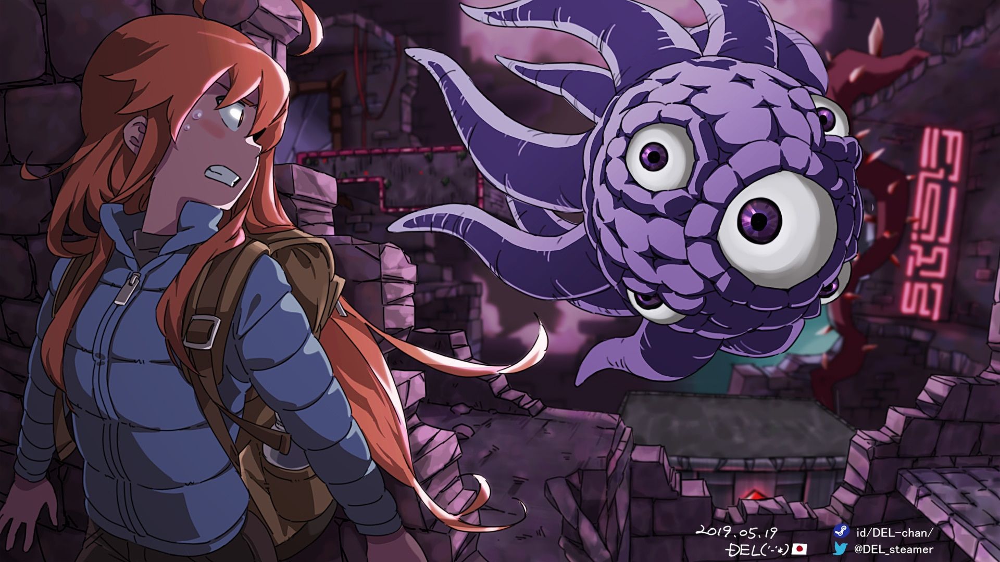

A fase Mirror Temple, de Celeste, é uma das partes mais sombrias da história, mostrando Madeline entrando em um templo abandonado cheio de escuridão e criaturas misteriosas. O local simboliza os medos e conflitos internos da personagem, principalmente sua luta contra Badeline, sua versão sombria.

Durante a fase, Theo acaba preso em um cristal mágico, e Madeline precisa salvá-lo enquanto enfrenta seus próprios problemas emocionais. Mirror Temple se destaca pela atmosfera tensa, pelas mecânicas diferentes e pelo desenvolvimento psicológico da protagonista.